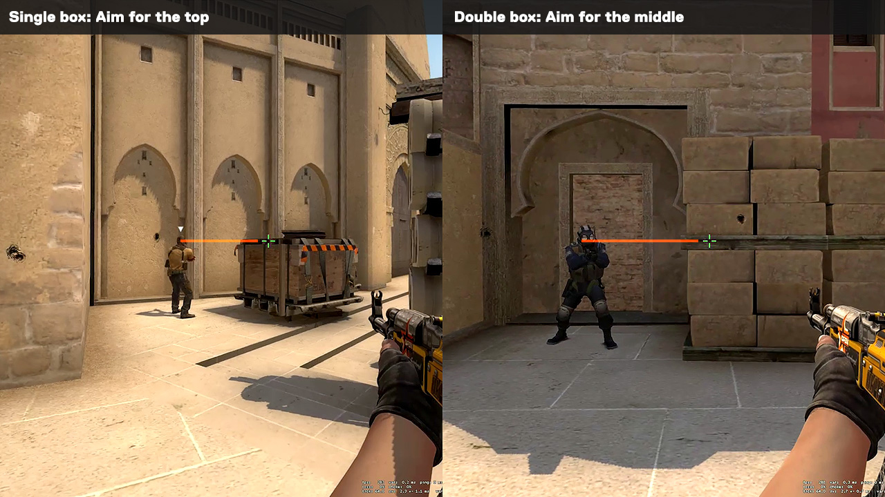

Aiming
Aiming in CS:GO is quite simple. Many people will tell new players to aim for the head as it helps in scoring headshots against enemies. The image above shows some ways to tell where head level is. Eventually, aiming for the head will come naturally. Generally, just don't make sure you crosshair does not touch the floor and improve from there.
Recoil control in CS:GO may seem strange to beginners as your crosshair does not fully follow your shots. Players will have to gague if their gun is shooting too high or low by looking at where their bullets land. However, CS:GO has a set recoil pattern for each gun, allowing players to master them and not depend on luck for a stray bullet to hit. Players can download community maps to help learn to aim.
Smokes and Flashes
Smokes are one of the most important deciding factor to a round. With smokes, you can block your enemies' from seeing anything you smoked. This could allow you to either take a site or defend it as you basically control what your enemies see. However, smoking could also be detrimental to your own team if you do not know when and how to smoke properly. This video shows some smoke line ups for the map Mirage that would be useful. However, knowing how to smoke is only half of what you need. You would also need to know when to smoke. For example, your teammate may be trying to kill an enemy but you throw your smoke into where he is and block his sight. Throwing smokes may not always the right play and it often depends on the situation so try not to waste smokes.
Flashes, similar to smokes, allow players to block others' sight. However, flashes have a higher area of effect and is almost instant, allowing to quickly prevent enemies from seeing and hearing you. However, they have a higher risk as they are more likely to affect you and your teammates with it high area of effect. Therefore, like smokes, players will need to learn how and when to use them. This video shows some useful flashes for Mirage, allowing you to flash your enemies and kill them easily.